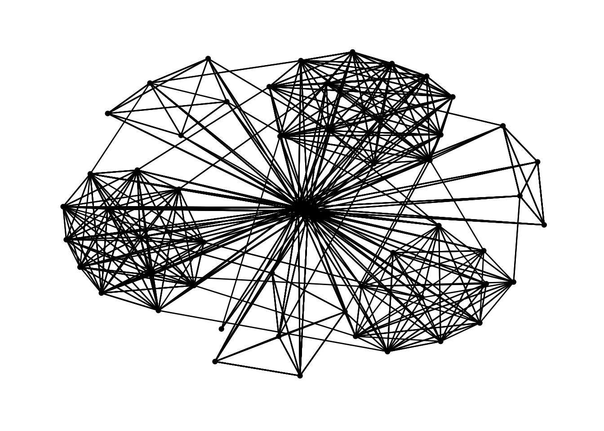
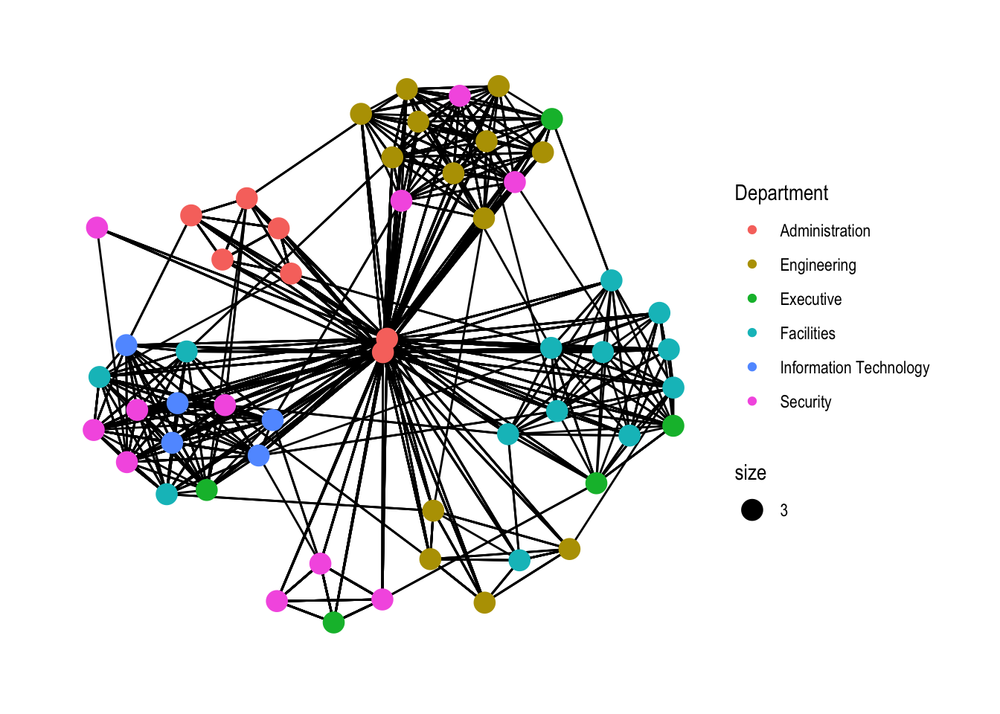
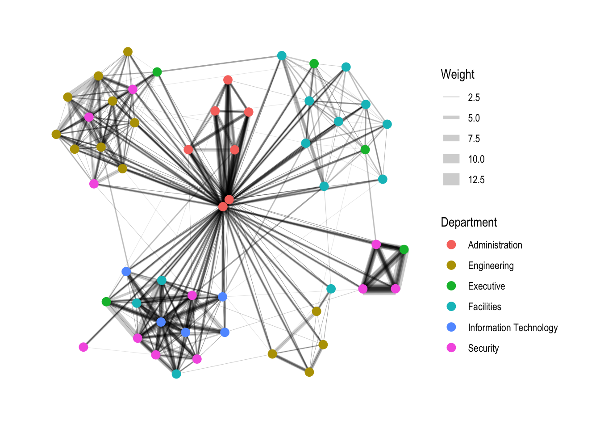
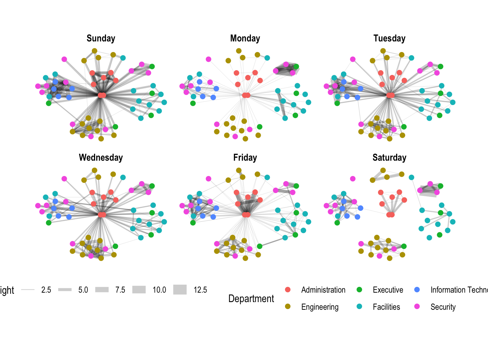

pacman::p_load(igraph, tidygraph, ggraph,
visNetwork, lubridate, clock,
tidyverse, graphlayouts)Hands-On Exercise 8
Hands-on exercise
To model, analyse and visualise network data using R.
1. Getting Started
1.1. Importing Libraries
In this hands-on exercise, four network data modelling and visualisation packages will be installed and launched: igraph, tidygraph, ggraph and visNetwork.
Beside these four packages, tidyverse and lubridate, an R package specially designed to handle and wrangling time data will be installed and launched too.
1.2. Prepare Data
Edge data: GAStech-email_edges.csv which consists of two weeks of 9063 emails correspondances between 55 employees.
Nodes data: GAStech_email_nodes.csv which consist of the names, department and title of the 55 employees.
GAStech_nodes <- read_csv("/Users/minghaooo/mtlmh34/ISSS608-VAA-mh/Data/s8/GAStech_email_node.csv")Rows: 54 Columns: 4
── Column specification ────────────────────────────────────────────────────────
Delimiter: ","
chr (3): label, Department, Title
dbl (1): id
ℹ Use `spec()` to retrieve the full column specification for this data.
ℹ Specify the column types or set `show_col_types = FALSE` to quiet this message.GAStech_edges <- read_csv("/Users/minghaooo/mtlmh34/ISSS608-VAA-mh/Data/s8/GAStech_email_edge-v2.csv")Rows: 9063 Columns: 8
── Column specification ────────────────────────────────────────────────────────
Delimiter: ","
chr (5): SentDate, Subject, MainSubject, sourceLabel, targetLabel
dbl (2): source, target
time (1): SentTime
ℹ Use `spec()` to retrieve the full column specification for this data.
ℹ Specify the column types or set `show_col_types = FALSE` to quiet this message.Show data.
glimpse(GAStech_edges)Rows: 9,063
Columns: 8
$ source <dbl> 43, 43, 44, 44, 44, 44, 44, 44, 44, 44, 44, 44, 26, 26, 26…
$ target <dbl> 41, 40, 51, 52, 53, 45, 44, 46, 48, 49, 47, 54, 27, 28, 29…
$ SentDate <chr> "6/1/2014", "6/1/2014", "6/1/2014", "6/1/2014", "6/1/2014"…
$ SentTime <time> 08:39:00, 08:39:00, 08:58:00, 08:58:00, 08:58:00, 08:58:0…
$ Subject <chr> "GT-SeismicProcessorPro Bug Report", "GT-SeismicProcessorP…
$ MainSubject <chr> "Work related", "Work related", "Work related", "Work rela…
$ sourceLabel <chr> "Sven.Flecha", "Sven.Flecha", "Kanon.Herrero", "Kanon.Herr…
$ targetLabel <chr> "Isak.Baza", "Lucas.Alcazar", "Felix.Resumir", "Hideki.Coc…1.3. Wrangling time
- Convert char type into date type;
- Extract days in a week.
GAStech_edges <- GAStech_edges %>%
mutate(SendDate = dmy(SentDate)) %>%
mutate(Weekday = wday(SentDate,
label = TRUE,
abbr = FALSE))1.4. Wrangling Attributes
GAStech_edges_aggregated <- GAStech_edges %>%
filter(MainSubject == "Work related") %>%
group_by(source, target, Weekday) %>%
summarise(Weight = n()) %>%
filter(source!=target) %>%
filter(Weight > 1) %>%
ungroup()`summarise()` has grouped output by 'source', 'target'. You can override using
the `.groups` argument.2. Create Networks
- tbl_graph() creates a tbl_graph network object from nodes and edges data.
- as_tbl_graph() converts network data and objects to a tbl_graph network.
- a node data.frame and an edge data.frame,
- data.frame, list, matrix from base,
- igraph from igraph,
- network from network,
- dendrogram and hclust from stats,
- Node from data.tree,
- phylo and evonet from ape,
- and graphNEL, graphAM, graphBAM from graph (in Bioconductor).
GAStech_graph <- tbl_graph(nodes = GAStech_nodes,
edges = GAStech_edges_aggregated,
directed = TRUE)
GAStech_graph# A tbl_graph: 54 nodes and 1372 edges
#
# A directed multigraph with 1 component
#
# Node Data: 54 × 4 (active)
id label Department Title
<dbl> <chr> <chr> <chr>
1 1 Mat.Bramar Administration Assistant to CEO
2 2 Anda.Ribera Administration Assistant to CFO
3 3 Rachel.Pantanal Administration Assistant to CIO
4 4 Linda.Lagos Administration Assistant to COO
5 5 Ruscella.Mies.Haber Administration Assistant to Engineering Group Manag…
6 6 Carla.Forluniau Administration Assistant to IT Group Manager
# … with 48 more rows
#
# Edge Data: 1,372 × 4
from to Weekday Weight
<int> <int> <ord> <int>
1 1 2 Sunday 5
2 1 2 Monday 2
3 1 2 Tuesday 3
# … with 1,369 more rows# arrange edges by weight
GAStech_graph %>%
activate(edges) %>%
arrange(desc(Weight))# A tbl_graph: 54 nodes and 1372 edges
#
# A directed multigraph with 1 component
#
# Edge Data: 1,372 × 4 (active)
from to Weekday Weight
<int> <int> <ord> <int>
1 40 41 Saturday 13
2 41 43 Monday 11
3 35 31 Tuesday 10
4 40 41 Monday 10
5 40 43 Monday 10
6 36 32 Sunday 9
# … with 1,366 more rows
#
# Node Data: 54 × 4
id label Department Title
<dbl> <chr> <chr> <chr>
1 1 Mat.Bramar Administration Assistant to CEO
2 2 Anda.Ribera Administration Assistant to CFO
3 3 Rachel.Pantanal Administration Assistant to CIO
# … with 51 more rows3. Visualization of networks
As in all network graph, there are three main aspects to a ggraph’s network graph, they are: - Nodes, - Edges, - Layouts.
3.1. Default network graph
ggraph(GAStech_graph) +
geom_edge_link() +
geom_node_point()Using "stress" as default layoutWarning: Using the `size` aesthetic in this geom was deprecated in ggplot2 3.4.0.
ℹ Please use `linewidth` in the `default_aes` field and elsewhere instead.
3.2. Changing theme
g <- ggraph(GAStech_graph) +
geom_edge_link(aes()) +
geom_node_point(aes())Using "stress" as default layoutg + theme_graph()
3.3. Changing colors
g <- ggraph(GAStech_graph) +
geom_edge_link(aes(colour = 'grey50')) +
geom_node_point(aes(colour = 'grey40'))Using "stress" as default layoutg + theme_graph(background = 'grey10',
text_colour = 'white')
3.4. Changing layouts
Layouts for ggraph(): star, circle, nicely (default), dh, gem, graphopt, grid, mds, spahere, randomly, fr, kk, drl and lgl.
g <- ggraph(GAStech_graph,
layout = "kk") +
geom_edge_link(aes()) +
geom_node_point(aes())
g + theme_graph()
3.5. Modifying nodes
g <- ggraph(GAStech_graph,
layout = "nicely") +
geom_edge_link(aes()) +
geom_node_point(aes(colour = Department,
# colour each node by referring to their respective departments
size = 3))
g + theme_graph()
3.6. Modifying edges
g <- ggraph(GAStech_graph,
layout = "nicely") +
geom_edge_link(aes(width=Weight),
# thickness of the edges will be mapped with the Weight variable
alpha=0.2) +
scale_edge_width(range = c(0.1, 5)) +
geom_node_point(aes(colour = Department),
size = 3)
g + theme_graph()
3.7. Creating facet graphs
set_graph_style()
g <- ggraph(GAStech_graph,
layout = "nicely") +
geom_edge_link(aes(width=Weight),
alpha=0.2) +
scale_edge_width(range = c(0.1, 5)) +
geom_node_point(aes(colour = Department),
size = 2) +
theme(legend.position = 'bottom')
g + facet_edges(~Weekday)
3.8. Creating a framed facet graph
set_graph_style()
g <- ggraph(GAStech_graph,
layout = "nicely") +
geom_edge_link(aes(width=Weight),
alpha=0.2) +
scale_edge_width(range = c(0.1, 5)) +
geom_node_point(aes(colour = Department),
size = 2)
g + facet_edges(~Weekday) +
th_foreground(foreground = "grey80",
border = TRUE) +
theme(legend.position = 'bottom')